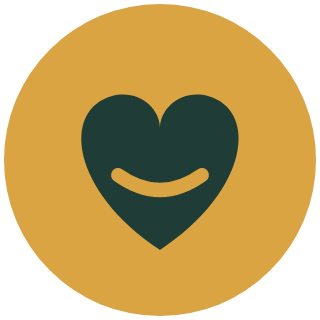
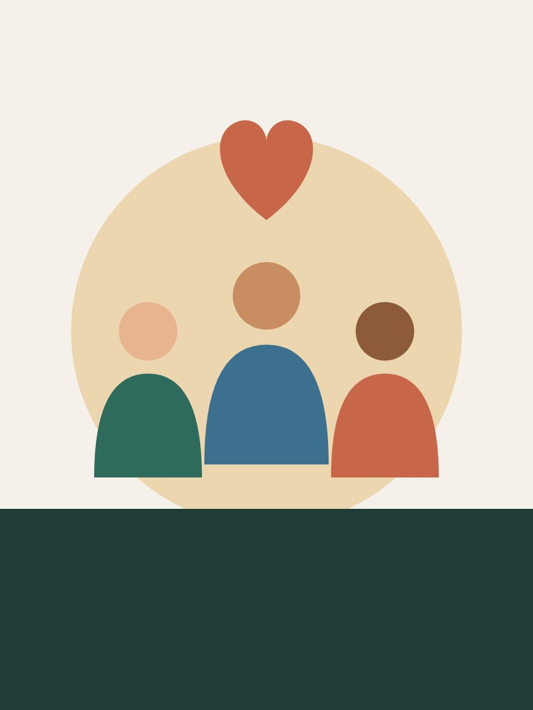
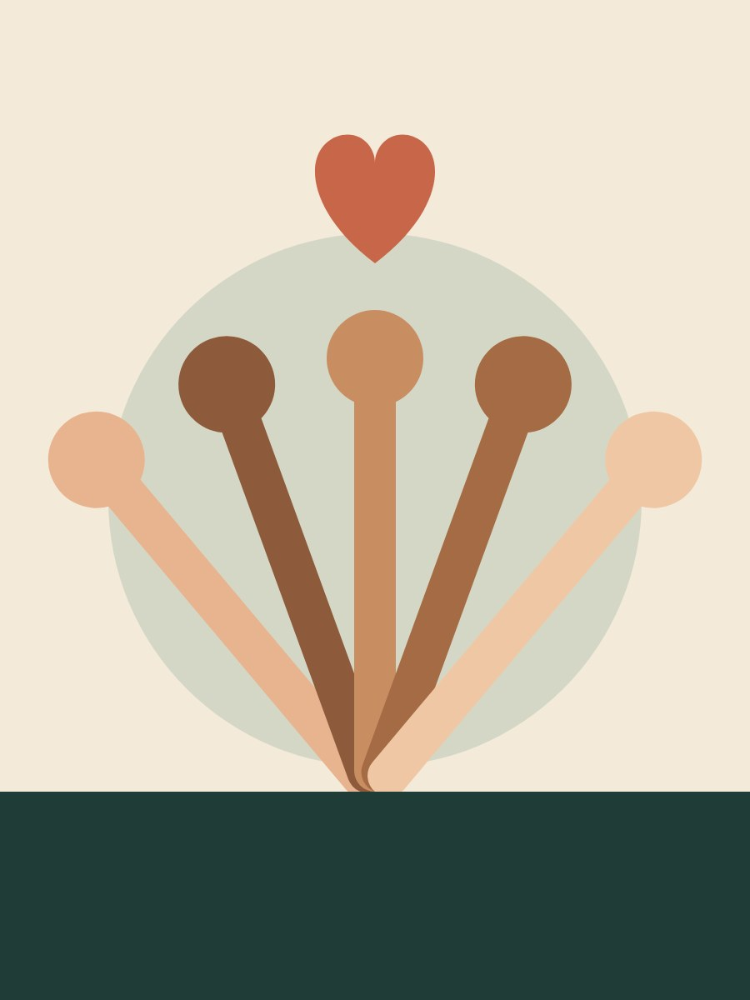
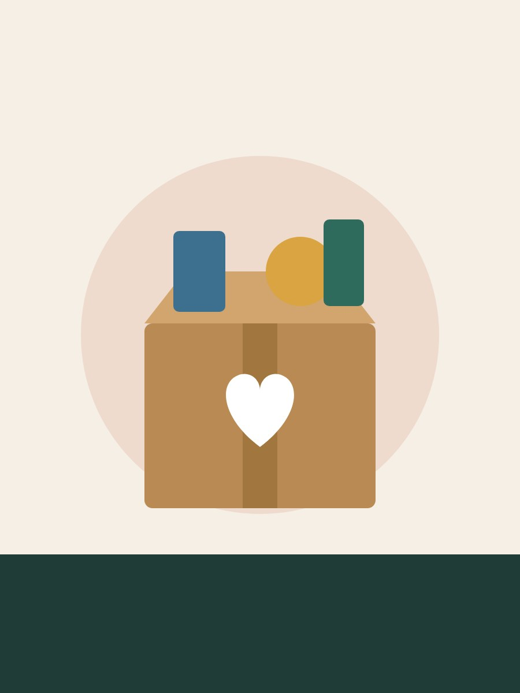

A ONG Mãos Solidárias é uma organização sem fins lucrativos dedicada ao desenvolvimento de projetos voltados para inclusão social, educação e assistência às comunidades em situação de vulnerabilidade.
Nosso objetivo é promover oportunidades, fortalecer laços comunitários e transformar vidas por meio da solidariedade.
Caso queira colaborar ou conhecer melhor nossos projetos, entre em contato conosco.
E-mail: contato@maossolidarias.org.br
Telefone: (11) 99999-9999
Endereço: Rua da Solidariedade, 100 - São Paulo/SP
Conjunto padronizado de sinalizações visuais para uso em todas as páginas do projeto. Esta é uma vitrine estática de referência visual — a versão funcional, ligada ao preenchimento e envio, está na página de Cadastro.
Este projeto oferece oficinas de informática, capacitação profissional e orientação tecnológica para jovens e adultos de comunidades vulneráveis.

O programa de voluntariado reúne pessoas dispostas a compartilhar conhecimento, tempo e dedicação em atividades educacionais e comunitárias.

As doações são fundamentais para manter nossos projetos. Com elas conseguimos atender famílias e desenvolver novas ações sociais.
Seu apoio pode transformar vidas. Cadastre-se para atuar como voluntário e participar das ações desenvolvidas pela ONG Mãos Solidárias.